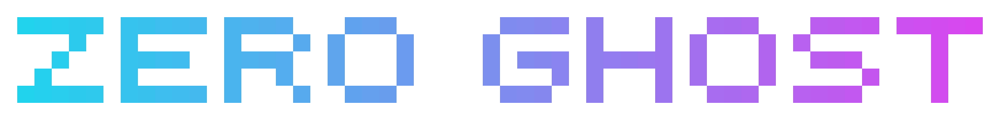
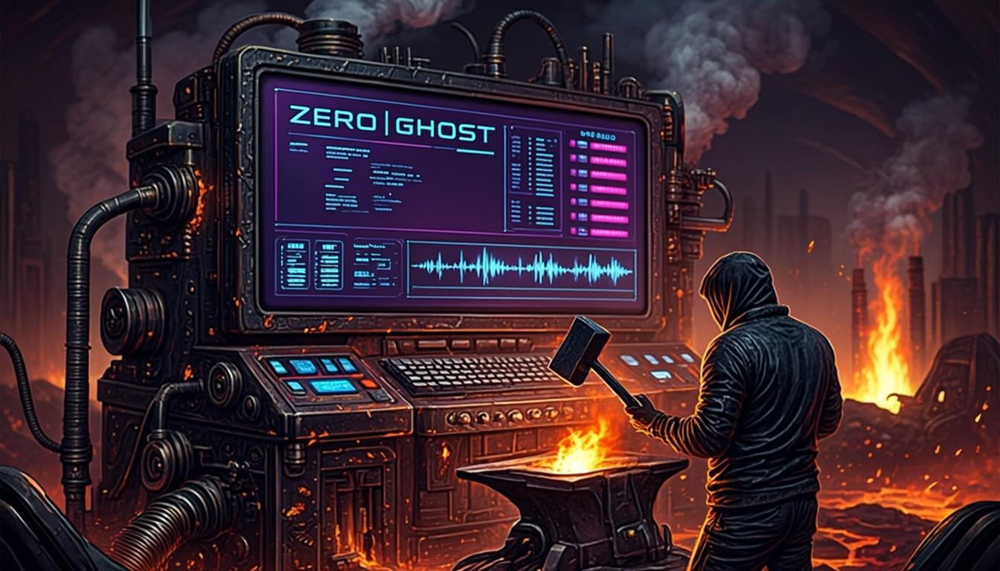
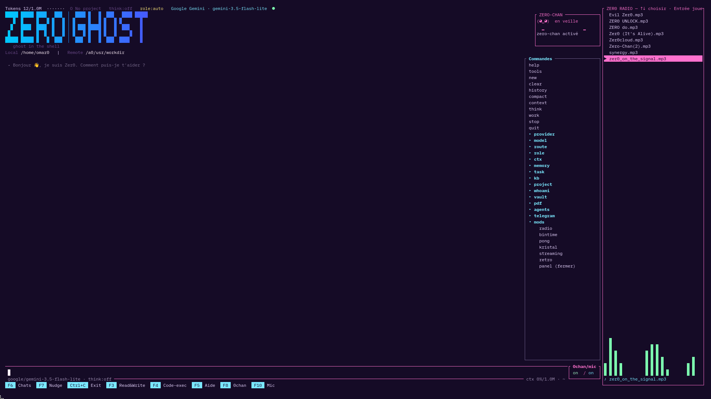

ZER0│GH0ST
Un agent IA qui vit dans ton terminal — ghost in the shell.


Rust · TUI · local ou cloud · aucune clé requise · MIT
Ce que c'est
Boucle d'agent
utilisateur → modèle → outils → réponse, avec streaming et détection de boucle.
Outils réels
code_exec (shell), text_editor (fichiers), web_search, mémoire, tâches.
Multi-provider
10 providers + custom, failover, backoff 429, modèles :free.
Passerelle zer0-gw
Binaire séparé, 3 modes de sécurité (standard/anonyme/zero-knowledge) — chiffrement de bout en bout.
Zero-chan (voix)
Assistante vocale intégrée : STT Whisper local, avatar kawaii animé.
Telegram
Converse à distance : texte, vocal, fichiers, progression. Long polling, aucune exposition.
Menu cliquable
Toutes les commandes à droite de la TUI, dépliables — sans rien taper.
Aperçu

Installer
Binaires Linux, macOS et Windows à chaque release.
# depuis les sources (partout) git clone https://github.com/Richerrail/zer0gh0st.git cd zer0gh0st ./scripts/install.sh # dépendances + build ./target/release/zer0 # ou ./scripts/run.sh
# mode 100% local (aucune clé API) export ZER0_MODEL=/chemin/mon-modele.gguf ./scripts/serve.sh # llama-server sur :8080 ./target/release/zer0 # puis, dans la TUI : /provider local
Quelques commandes
/help · /think · /provider · /model · /ctx · /route · /role
/memory · /task · /work · /ask · /review · /search · /kb
/telegram on|off · /whoami · /vault · /pdf · /radio · /bintime · /pong
F3 Read&Write · F4 Code-exec · F6 Chats · F7 Nudge · F8 0chan · F10 Mic
Crédits
Inspiré par Agent Zero (Python), Spynel et pi.dev.
Merci appuyé à kioptix pour
Synnoesis
(synnoesis.dev) — c'est de sa philosophie
d'honnêteté que ZER0 s'inspire.